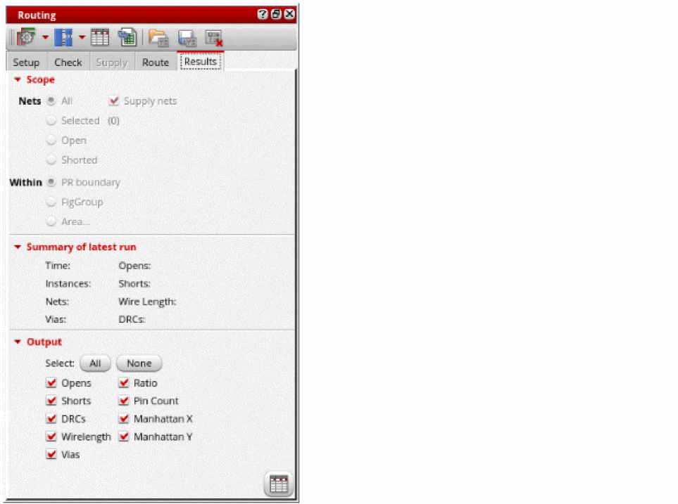
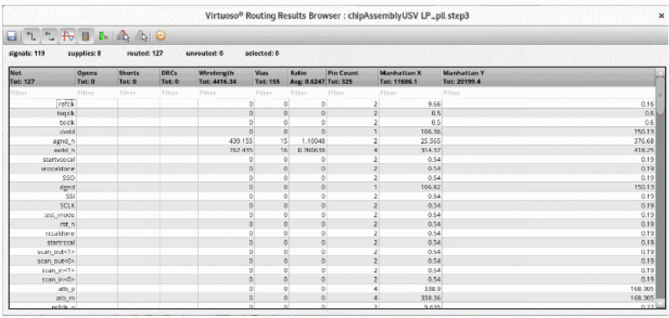

Viewing and Analyzing Chip Assembly Routing Results
To view and analyze the results:
- Open a design in Layout MXL.
- Choose Window – Assistants – Routing. Alternatively, right-click anywhere on the layout window menu bar and choose Assistants – Routing.
-
Click the Results tab in the Routing assistant.
 - Select the scope of nets to analyze the routing results. You can either select All, Selected, Open, or Closed nets.
- Select Supply Nets to see the results of the power and ground nets.
- Select the area for which you want to view the routing results. You can select either PR boundary, a figGroup, or select an area in the design.
- Select All in the Output section. You can also select one or more outputs by clicking the check box next to the output name. The selected output name column is displayed in the Routing Results Browser.
-
Click on the Results Browser button at the bottom right corner. The Routing Results Browser displays. You can see the total number of routed nets, opens, shorts and the details of various violations.

Related Topics
Chip Assembly Routing Configuration
Routing Assistant User Interface for Chip Assembly Routing Flow
Configuring Chip Assembly Routing Settings
Checking Layout Routability in Chip Assembly
Viewing and Analyzing Chip Assembly Routing Results
Return to top